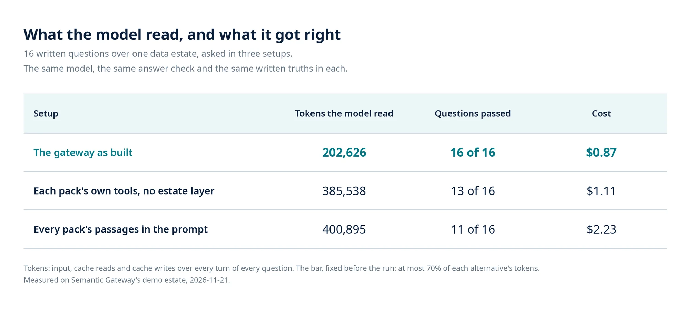

What an Agent Reads With and Without a Semantic Gateway
By Alexander Chernov. First published on LinkedIn, 2026-11-21. Read the original.
On 16 written questions over one data estate, an agent working through Semantic Gateway answered all 16 and made the model read 202,626 tokens. Given the same packs without the gateway, the agent answered 13 and read 385,538 tokens; with every pack’s passages placed in the prompt instead, it answered 11 and read 400,895. The gateway’s share was 0.53 and 0.51 of what the two alternatives read, under a bar of 0.70 fixed before any money was spent. The saving came from questions about the estate as a whole, where the gateway returns facts that the other setups had to assemble from passages. On questions that one pack answers, there was no saving.
Tokens are what a model is paid for and what fills its context. A design that makes the model read less for the same answer is cheaper per question and leaves more room in the context for the work itself.
Three ways to give an agent the same data
The estate is Semantic Gateway’s demo of public water-quality data: results, monitoring locations, projects, drinking-water regulations, fertilizer use, weather and method publications, with four ontology packs, in 12 searchable packs. Every pack is governed by a versioned policy, and every caller sees only the packs it may use. The agent was given the same estate in three ways:
- The gateway as built — four estate tools: a search routed across the packs, the exact links between packs with their defects, the concepts the packs share with any conflict among them, and the evidence for any one link, mapping or decision. Apart from the search, each returns what the estate knows as a fact, computed from the packs.
- Each pack’s own tools — for every pack the caller may use, a description, a search and a read, and no estate layer. The policy gate was unchanged.
- Everything in the prompt — no tools. The host ran every search the caller may run, 10 passages from each pack, and placed the results in the question.
The questions were the gateway’s existing chat evaluation: 12 with an answer in the estate, 3 that ask for something the caller may not see, and 1 the estate cannot answer, asked as four different callers. Every answer went through the same check: it is shown only if every quote appears in a passage a tool returned and every number appears in what the tools returned. Each question also has a truth written before the run, such as that the nitrate limit is 10 mg/L and comes from the regulation. The model, its settings and the check were the same in all three setups. The bar was written down before the run: the gateway passes if it reads at most 70% of the tokens of each alternative and gets at most one question fewer right.

Where the saving comes from
The saving is on questions about the estate as a whole. “Which packs hold nitrate?” took 4,764 tokens through the gateway, which answered it from the concepts the packs share. With each pack’s own tools the agent searched pack after pack and read 24,012; with every pack’s passages in the prompt it read 39,291. “Where do the packs disagree about how nitrate is reported?” took 4,780 tokens through the gateway, which computes the conflict across the result records: nitrate reported “as N” in some and “as NO3” in others. Both alternatives read about 40,000 tokens and failed the written truth, which asks for both bases: from passages, both found nitrate reported as nitrogen, and neither found the records reported as NO3. The question about the links between results and projects, and their defects, cost the agent with per-pack tools 8 turns and 115,299 tokens. The gateway answered it in 2 turns and 26,043.
Facts computed once from the packs replace passages the model would otherwise have to read and combine. That is where both the tokens and the right answers come from.
Where it does not
On a question that one pack answers, the gateway saved nothing. “What is the maximum contaminant level for nitrate in drinking water?” took 22,114 tokens through the gateway over three turns, against 11,653 over two turns with the packs’ own tools and 14,210 in one with every passage in the prompt. The routed search also returns its own account of which packs it opened and which it did not, which costs tokens when the answer sits in one place. For a single-pack question, a pack’s own search is the cheaper tool.
A count is not a run
Before the paid run, the requests were counted with the API’s token-counting endpoint, which generates nothing. That count assumed that an agent without the estate layer searches every pack once. On that assumption the gateway read 0.14 of the per-pack setup’s tokens. In the paid run the agent searched fewer packs than every one, and the measured share was 0.53. The count gave a ceiling; the run gave the result. The same count also measured the decision layer: in the gateway’s admission of proposed ontology mappings, leaving the decision to the Brain API instead of the model kept 934 tokens per proposal out of the model’s context, 51% of what each proposal sends.
Removing what a caller may not see, before routing
The same design choice keeps the gateway’s answers inside each caller’s permissions. A pack a caller may not use is removed before the search is routed, not filtered out of the results afterwards. Across six callers and 440 queries each, the host’s own search returned nothing from a pack the caller may not use: 2,200 searches, no violations, with the sixth caller, which may use no pack, refused every search. A planted version that routes first and filters later leaked 12,952 times.
Removing first also keeps the recall. The visitor, who may use 5 of the 12 packs, kept recall@10 at 1.000 when hidden packs were removed before routing. Filtering afterwards dropped it to 0.612, because the search’s budget of four packs was spent on packs the visitor could not use. For callers who may use most packs, the two approaches differ by less than 0.003. Control and cost are decided by the same step.
Limits
- One estate and 16 questions. The questions were written for the gateway’s own evaluation, before this comparison existed. A second estate and more questions would show how far the result travels.
- One model and one setting. A different model may search more or less eagerly without the estate layer, which moves the alternatives’ totals.
- Three questions favored the gateway by construction. Each needs a fact only the estate layer computes: a count of links, a conflict across packs, a pack the caller may know about but not read. The alternatives failed them for that reason. The setup with everything in the prompt also had no read tool, so it could not ask for the approval one question needs.
What the framing enables
Measuring tokens per answered question turns the value of a semantic layer into a number that can be tested, and its limits into a rule: route questions about the estate to the estate’s facts, and questions about one source to that source. Placing the policy before routing makes the cheaper path and the permitted path the same path. The next measurement is a second estate.
References
The system
- Semantic Gateway. https://semanticgateway.ca
- A. Chernov, “Semantic Gateway: Agent Scope demo video (one data estate behind a policy gate),” Zenodo, 2026. https://doi.org/10.5281/zenodo.23906429
- A. Chernov, “Brain API: An Intent-Aware Control Plane for Policy-Governed Agentic Systems,” arXiv:2609.21299, 2026. https://arxiv.org/abs/2609.21299
- Agentic Dataset Reference Implementation and Conformance Suite, Zenodo. https://doi.org/10.5281/zenodo.22536342
The method
- Anthropic, “Token counting.” https://docs.claude.com/en/docs/build-with-claude/token-counting
Every link above was checked on 2026-11-21.
#AgenticAI #AIAgents #LLM #RAG #TokenCost #SemanticLayer #DataGovernance #AIGovernance #KnowledgeGraph #AgenticDatasets #BrainAPI #SemanticGateway
© 2026 Alexander Chernov. All rights reserved. First published on LinkedIn, which remains the canonical version; this page is a reprint by the author.